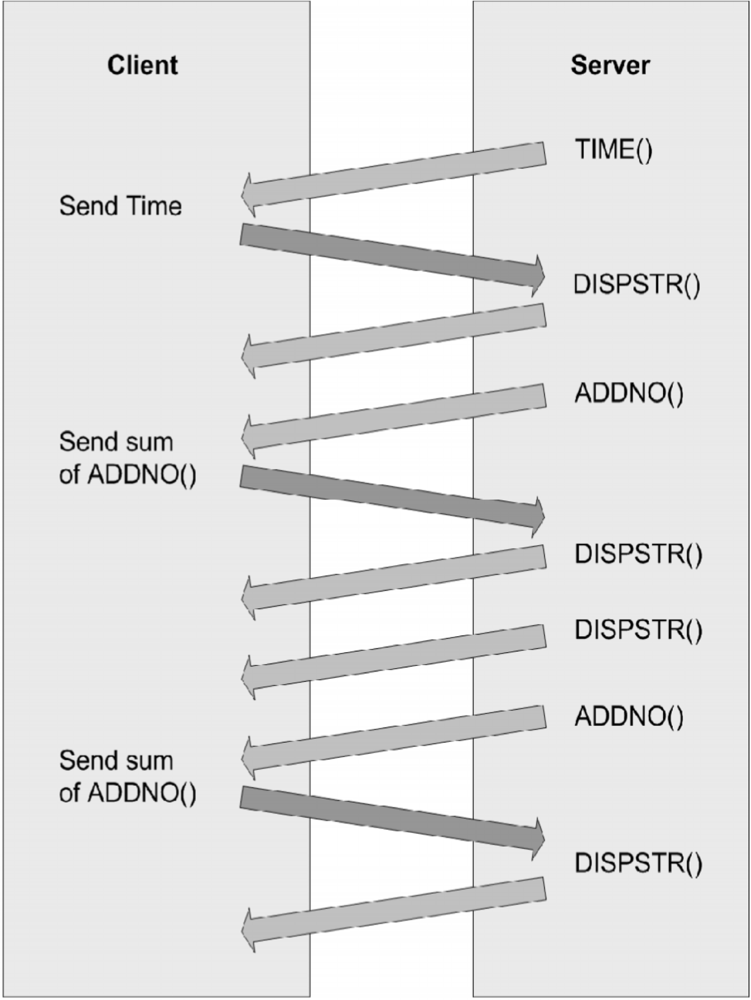

Using example programs
The example programs included with the Virtual Channel SDK are buildable, working virtual channels. Use these examples to:
- Verify your Virtual Channel SDK is correct by building a known working example program.
- Provide working examples of code that can be modified to suit your requirements.
- Explore the features and functionality provided in the Virtual Channel SDK.
Each of these example programs comprises a client virtual driver and a server application. The server-side application is run from the command line within an ICA session. A single virtual channel comprises an application pair.
The example programs included with the Virtual Channel SDK are:
- Ping: Records the round-trip delay time for a test packet sent over a virtual channel.
- Mix: Demonstrates a mechanism to call functions (for example, to get the time of day) on a remote client.
- Over: Simple asynchronous application that demonstrates how to code an application where the server must receive a response from the client asynchronously and where the type of packet being sent to the client is different from the type received.
Each example includes a description of the program, packet format, and other necessary information and demonstrates the following:
- How to include Virtual Channel SDK the JavaScript file within the Chrome packaged app.
- How to register the virtual channel to the SDK.
- How to handle driverOpen, driverInfo, icaDataArrival, driverClose and sendData.
- How to use utils to read the packet in Uint8Array format and also construction of reply packet using utils.
Ping
Ping is a simple program that records the round-trip delay time for a test packet sent over a virtual channel. The server sends a packet to the client and the client responds with a packet containing the time it received the original packet from the server. This sequence is repeated a specified number of times, and then the program displays the round-trip time for each ping and the average round-trip delay time.
For this example, there is no significant difference between a BEGIN packet and an END packet. The two types of packets are provided as an example for writing your own virtual channel protocols.
Packet Format
The following packet is exchanged between the client and the server.
Byte 0-1 uSign; // Signature Byte 2-3 uType; // Type, BEGIN or END, from server Byte 4-5 uLen; // Packet length from server Byte 6-7 uCounter; // Sequencer Byte 8-11 ulServerMS; // Server millisecond clock Byte 12-15 ulClientMS; // Client millisecond clock
Mix
Mix demonstrates a mechanism that you can use to call functions on a remote client (for example to get the time of day). This program demonstrates an extensible scheme for making function calls from the server to the client that allows the server to specify when it expects a response from the client and when it does not. This method can increase performance, because the server does not have to constantly wait for a reply from the client.
The server calls a series of simple functions:
AddNo: Add two numbers and return the sum as the return value.DispStr: Write a string to the log file. There is no return value (write-only function).Gettime: Read the client time and return it as the return value.
The actual implementation of these functions is on the client side. The server conditionally waits for the response from the client, depending on the function being executed. For example, the server waits for the result of the AddNo or Gettime function, but not the write-only function DispStr, which returns no result.
Packet Format
Byte 0-1 uType // Packet type Byte 2-3 uFunc; // Index of Function Byte 4-7 uLen; // Length of data Byte 8-9 fRetReq; // True if return value required Byte 10-13 dwRetVal; // Return Value from client Byte 14-15 dwLen1; // length of data for \#1 LpVoid Byte 16-17 dwLen2; // length of data for \#2 LpVoid
The data consists of the structure above followed by the arguments to the function being called. uLen is the total length of the data being sent, including the arguments. DwLen1 is the length of the data pointed to by a pointer argument.
Sequence of Events
The Mix program demonstrates the following sequence of events. The following figure illustrates the sequence of events that occur when you use the Mix program, starting at the top:

Over
Over is a simple asynchronous application. It demonstrates how to code an application in which the server must receive a response from the client asynchronously, and the type of packet being sent to the client is different from the type received.
When the Over program begins, it:
- Spawns a thread that waits for a response from the client.
- Begins sending data packets with sequence numbers to the client.
- (After sending the last packet of data) sends a packet with a sequence number of
NO\_MORE\_DATA, and then closes the connection.
The client receives packets and inspects the sequence number. For every sequence number divisible by 10, the client increases the sequence number by 7 and sends a response to the server. These numbers are chosen arbitrarily to demonstrate that the client can asynchronously send data to the server at any time.
The packet type used to send data from the server to the client is different from the packet type used to receive data from the client.
Packet Format - From Server to Client
Byte 0-1 uSign; // Signature Byte 2-3 uType; // Type, BEGIN or END, from server Byte 4-5 uLen; // Packet length from server Byte 6-7 uCounter; // Sequencer Byte 8-11 ulServerMS; // Server millisecond clock
Packet Format - From Client to Server
Byte 0-1 uType; // Type OVERFLOW\_JUMP from client Byte 2-3 uLen; // Packet length from client Byte 4-5 uCounter; // seqUencer
Sequence of Events
This figure illustrates the sequence of events that occur when you use the Over program, starting at the top.